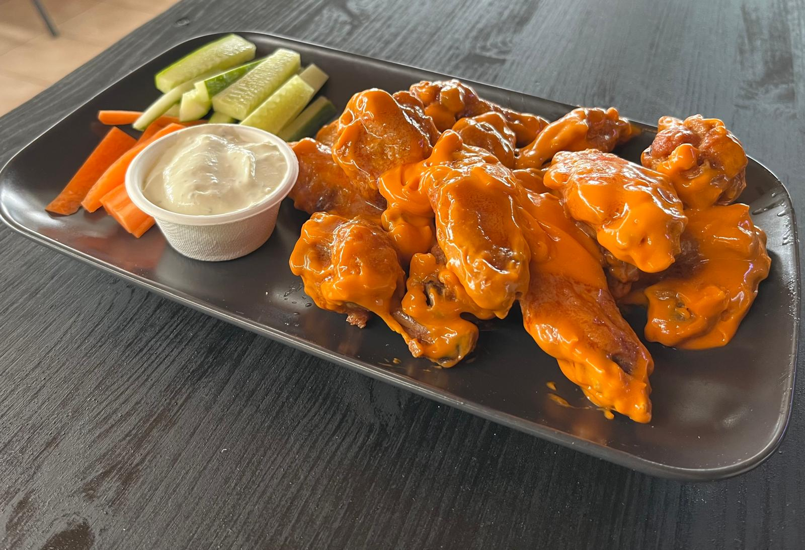
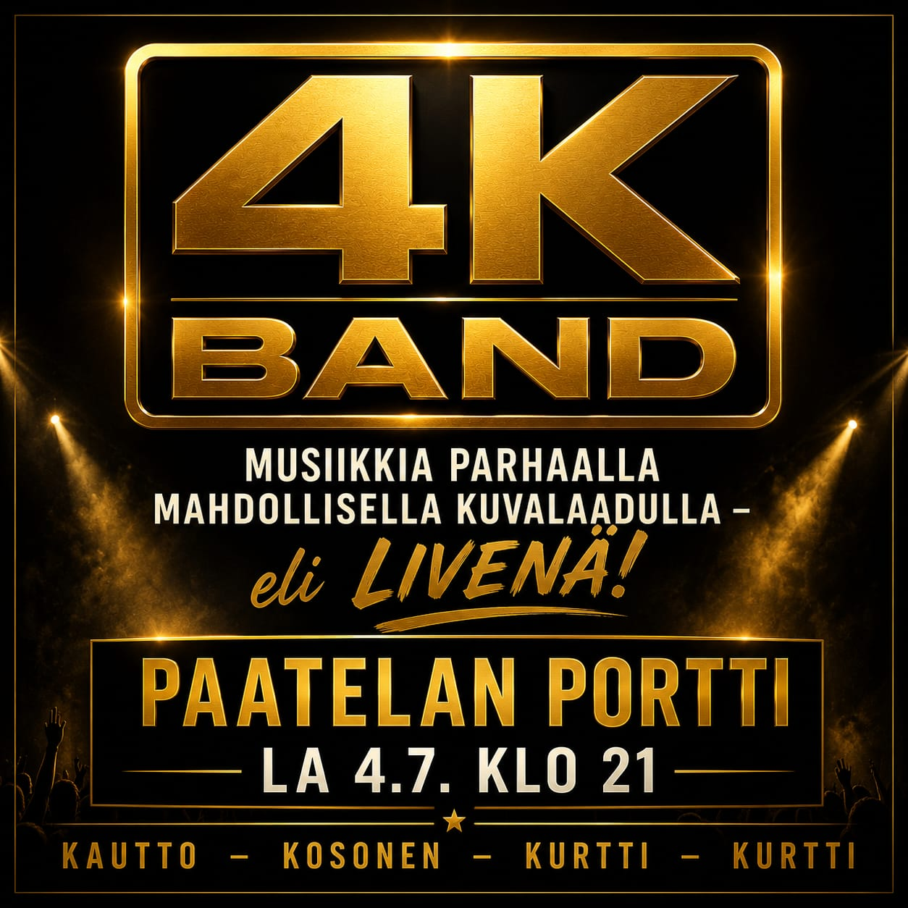

Kanavamaiseman ravintola vuodesta 1994
Paatelan Portti
- Osoite
- Äänekoskentie 842
- Lounas
- 10.30-15.30
- Tilaukset
- 040 755 7155
Tervetuloa rantamaisemiin
Tarina Paatelan Portin takana
Paatelan kanava avattiin vuonna 1994 ja samaan aikaan avattiin myös ravintola Paatelan Portti. Uusi kanava oli suuressa suosiossa turistien keskuudessa. Ravintolasta järjestettiin suunnittelukilpailu, jonka voitti Aarne Ilveksen rakennusliike, joka myös toteutti ravintolan. Toiminta jäi Aarnelle ja hänen puolisolleen heti alusta alkaen.
Ravintolan rinnalle avattiin Suvetar-niminen sisävesiristeilijä, joka aloitti liikennöinnin Keiteleellä. Nykyään laiva on Suvi Express, jota Aarne isännöi kotisatamassaan Paatelan Portin laiturilla. Laivassa on anniskeluoikeudet, ja se liikennöi Keiteleen lisäksi myös Päijänteellä.

Kanavan vieressä
Helppo pysähtyä kahville, lounaalle tai iltaruoalle.
Paatelan Portti palvelee Äänekoskentie 842:ssa, veden ja kesäisen rantamaiseman äärellä.
Kahvio, lounas ja talon suosikit
Päivän pysähdys Paatelan Portissa
Lounas arkisin klo 10.30-15.30
Päivän keittolounas tarjoillaan lounasaikaan. Lounas maksaa 8,90 €. Lista päivittyy kauden ja viikon mukaan.

Kahvio
Kahvia, vitriinituotteita, täytettyjä sämpylöitä, ruisleipää, toastia ja paniineja pieneen nälkään.

Pizzat ja täytteet
Valitse normaali tai iso pizza ja lisää täytteitä oman maun mukaan.
Täytteet
ananas, aurajuusto, herkkusieni, jalapeno, jauheliha, kinkku, oliivi, paprika, pepperonimakkara, punasipuli, rucola, salami, savuporo, tomaatti, tonnikala ja vilukana.

Talon pizza ja hot wingsit
Hot wingsit, normaalit ja isot pizzat sekä lapsille pizzaa, ranuja, nugetteja ja nakkiranuja.
Menut ja hinnat
Kahvion ja keittiön valikoimaa
Kahvion menu
- Kahvi2,00 €
- Täytetty sämpylä4,00 €
- Toast4,00 €
- Ruisleipä4,00 €
- Voileipäkakku pala5,00 €
- Panini6,50 €
- Pillimehu1,50 €
- 0,5 Limupullo3,50 €
- 0,5 Vichy2,50 €
- Battery3,00 €
- Vaihtuva leivosKysy tarjoilijalta
Pizza, wingsit ja lasten annokset
- Hot wings 15 kpl14,90 €
- Pizza, normaali12,90 €
- Pizza, iso16,90 €
- Lisätäyte pizzaan1,00 €
- Lapsille
- Ranut5,90 €
- Nugettiranut, 6 kpl nugetteja8,90 €
- Nugetit 8 kpl6,90 €
- Nakkiranut8,90 €
Ravintolan puolella anniskeluoikeudet
Ravintolan puolella on anniskeluoikeudet. Valomerkki annetaan viimeistään klo 01.30.
Kuvia paikan päältä
Kahvio, kanava ja talon suosikit samassa pysähdyksessä


Tilaukset ja kysymykset
Soita tai laita viesti WhatsAppiin
Voit kysyä päivän lounasta, tehdä puhelintilauksen tai varmistaa keittiön tämänhetkisen valikoiman suoraan ravintolasta.
Yksityistilaisuudet ja juhlatilaisuudet
Juhlat kanavamaisemassa
Paatelan Portissa voi järjestää yksityistapahtumia, polttareita, häitä, syntymäpäiviä tai vaikka pienet festarit. Kerro meille millainen tilaisuus on mielessä, niin palaamme tarjouksen kanssa.
Perjantaisin Paatelan Portissa lauletaan karaokea AJ Viihteen tuottamana klo 20.00 alkaen. Torstaisin kanavakaraoke alkaa klo 18.00 tutun Timo Kolun vetämänä. Lauantaisin ohjelmassa voi olla tanssi-iltoja ja elävää musiikkia.
- Yksityistapahtumat
- Polttarit ja syntymäpäivät
- Häät ja perhejuhlat
- Pienet festarit ja kesäillat
- Karaoke, tanssi-illat ja elävä musiikki
Tutustu laivaan
Suvi Express kantosiipialus
Juhlaan voi yhdistää myös järvimatkailun: Suvi Express liikennöi kotisatamastaan Paatelan Portin laiturilta Keiteleellä ja Päijänteellä. Laivassa on myös anniskeluoikeudet.
Tapahtumakalenteri
Viikon vakio-ohjelma ja tulevat illat
Katso viikon vakio-ohjelma ja tulevat illat. Tarkemmat esiintyjät ja lisäillat päivittyvät kalenteriin.


Aukioloajat
- Ma-To
- 9.30 - 21.30 (02:00)
- Pe
- 9.30 - 22.30 (02.00)
- La
- 10.30 - 22.30 (02.00)
Asiakaspalaute
Haluamme tarjota asiakkaillemme ystävällistä palvelua ja viihtyisän asiointikokemuksen. Kehitämme toimintaa jatkuvasti, jotta voimme tarjota asiakkaillemme vain parasta. Kaikki palaute on meille arvokasta ja lämpimästi tervetullutta.